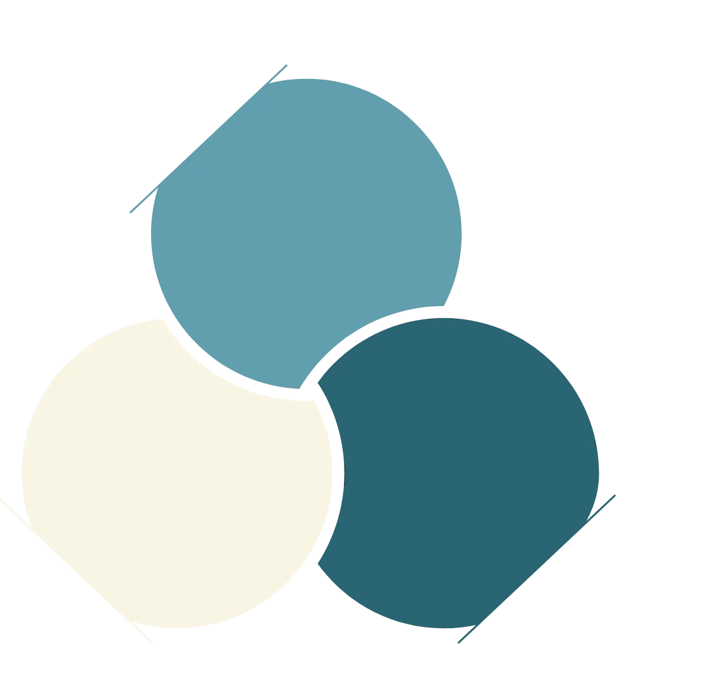

An asset class historically reserved for trade finance banks — now accessible as rated debt instruments on Ethereum.
Commodity trade finance funds the movement of physical goods: oil, grains, metals and critical minerals between producers and buyers. These are short-term loans backed by real trade flows. Stoken originates, selects and credit-scores this debt, converting it into a ledger-based security on Ethereum, giving on-chain investors direct access to an asset class that has historically been the exclusive domain of global trade finance banks.
Stokens are used to fund working capital needs that enable the production, transport, storage and delivery of commodities to their ultimate users.

Illustrative terms only. This is not a live offer or solicitation. Every Stoken represents one facility with its own rating, yield and maturity.
Stoken is open to qualified institutional investors. Verification is handled entirely in-house. Once approved, your wallet is whitelisted and you gain full access to available facilities.
Submit your
institutional
details on
stoken.finance
In-house review
No third-party
providers
Address enforced at smart-contract level
Browse rated facilities
in the marketplace
Commit through Cadmos Primary Market